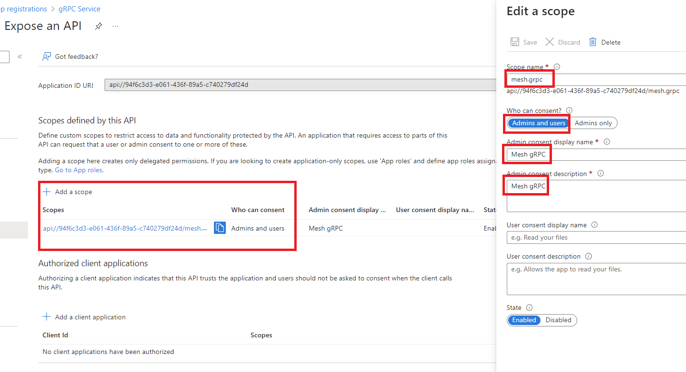
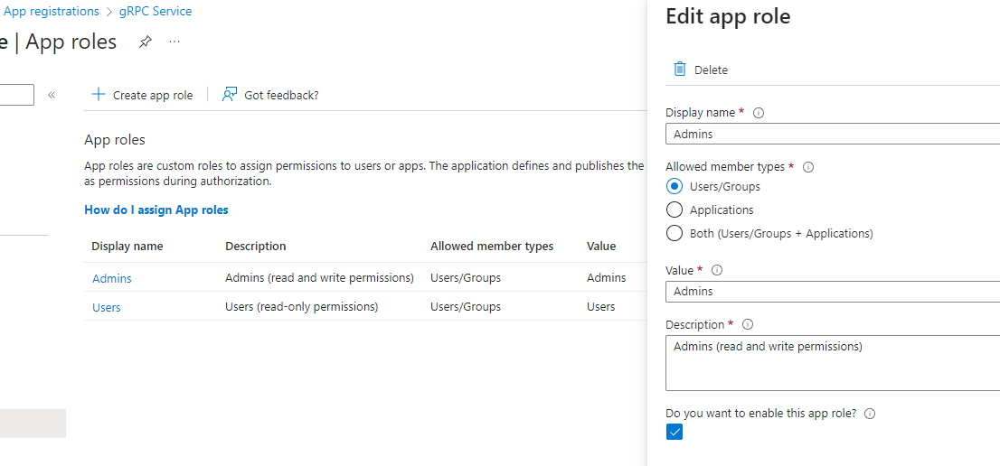
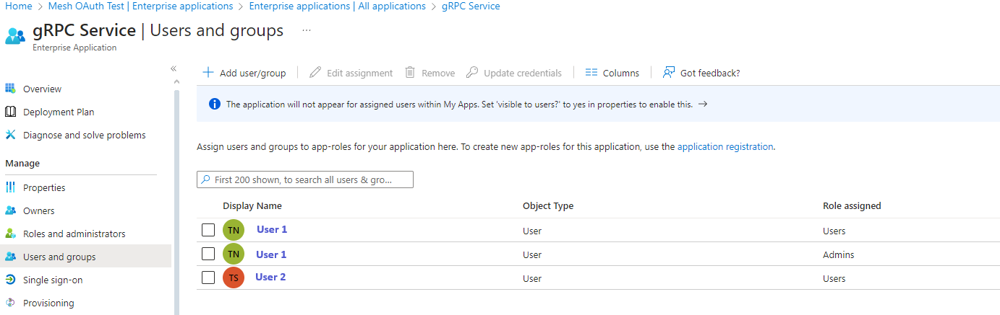

Configuration
For functionality description and configuration please refer to: Mesh service installation guide.
Testing
OAuth 2.0
For Microsoft Entra ID environment you can follow the steps below:
- For the protected API (i.e.: Mesh gRPC server) create an application registration:

Authorization code flow
- Expose API of the created application and add a scope:

- Create client secret and save its value:

- Create app roles for the users/groups:

- Assign app roles to the users/groups:

Now we want to get an access token. First we need to call authorize endpoint
and get authorization code. Open internet browser, enter the following URL and
change the parameters according to your setup:
https://login.microsoftonline.com/YOUR_DOMAIN.onmicrosoft.com/oauth2/v2.0/authorize?response_type=code&client_id=YOUR_CLIENT_ID&redirect_uri=REDIRECT_URI_FROM_STEP_1&scope=openid%20profile
In return we should get something like this:
https://localhost:5001/?code=0.AUsA9qdgUwMwDkOIVHHdOulTT9PD9pRh4G9DiaXHQCed8k1LAHs.AgABAAIAAAD--DLA3VO7QrddgJg7WevrAgDs_wUA9P9bchFZhU35cRjwyL4Ody0v5VVAPW5RhSdysOasDYmhU-QSjiZVIiL_Ma8fxNlGdoZiM0bi_fQ0alKr8qEB-ZhezENOme3DdYd11Q_1_6gVqtgUV_yqRO8oHvh7mma14QD_r41ClgcZhxYvTLlDyAddqqL4Qk92-7u2kaMYfu9RlinZ9DoCI29-GGjTAgxUePlQgVBfMmquKaQG2sBs3tbEhi3prwZrzI-vqbRel0mur7ssn2-2YKREjmL4d9cc04V0mYoy612SEJm3UgZMjvby5A9M28pYFUdlBNSOoNl8tYku7jRVROYGESJL5OxPRYEA-yecPo2LtHUqsnp6X9CEV4s8z7G8rMmQlYZibzuppr5WJ_AWj_d_jaZrYJI2oJFO3KrkoRGvK-v71l_6bdVxesMc2m5QQFInHMF6_P_9NqxqevKq1nub98ms8DqgfIcUatYLxcVTIBKFIDrSLcYYDLMkTvuIpTmTBX0dSbdTcYL8tNCcEh197bUPZHIu8jHaL-eV8wQm1TprzsbJun6y0e1C5ExYe3IfUFbl6uomjcb6VDqZV4l3RSiFGJxe9af7CPzbWSqnx7Z0D4c3H1BIxul8j_oL1OgSL1wIJlLnx88XQgHz9p0v0k9dCGSUK-95Mjq8BiOG7URWJx_Q6SozZvsgm0TT7GBv5-NTigRHJL7L6iAOZTl4vhFl9evex7SX5N3Y_5w_N1h2kvhPA7ufRlJaF77N6t2hvxsiJ85Q8Yby76zN2f3fxhvUBze1YQT25wGTE8znP79dVTll2EVNk--FYn7qTzc5P6aOzhlgvFHS6IsDg18yefI_S0_7jDDTVLopHPdpIqY&session_state=ba3502a4-903f-461c-bbdb-995e4d76ed62#
Copy the code parameter value. Now we need to make a POST request to the token endpoint.
For this I'm using Postman, but you can use also curl or other software.

URL: https://login.microsoftonline.com/YOUR_DOMAIN.onmicrosoft.com/oauth2/v2.0/token
grant_type: authorization_code
redirect_uri: REDIRECT_URI_FROM_STEP_1
client_id: YOUR_CLIENT_ID
scope: YOUR_SCOPE_FROM_STEP_2
code: CODE_GOT_FROM_TOKEN_ENDPOINT
client_secret: YOUR_CLIENT_SECRET_FROM_STEP_3
You will get a response message with access token. You can check the access
token's content in e.g.: jwt.io. The access token could now be
used to call e.g. Mesh gRPC server. For gRPC the token needs to be send in the
Authorization header when making a call to the API, like:
Authorization: Bearer <token>
Client credentials flow
- In the protected API application create app roles for the applications (daemons):

- For the daemon client application follow the steps below. Create new application
registration, leave the
Redirect URIempty:

- Create client secret and save its value.
- Request API permission for the app role created in step 1:

- Now we need to grant consent for the requested permission. Click on the
Enterprise applicationslink:


- At the end we should see proper status in the API permission view:

Now we want to get an access token. We need to make a POST request to the token endpoint.
For this I'm using Postman, but you can use also curl or other software.
URL: https://login.microsoftonline.com/YOUR_DOMAIN.onmicrosoft.com/oauth2/v2.0/token
grant_type: client_credentials
client_id: YOUR_CLIENT_ID (the deamon app ID)
scope: PROTECTED_API_APPLICATION_ID_URI + '/.default' (e.g.: api://94f6c3d3-e061-436f-89a5-c740279df24d/.default)
client_secret: YOUR_CLIENT_SECRET_FROM_STEP_3
You will get a response message with access token. You can check the access
token's content in e.g.: jwt.io. The access token could now be
used to call e.g. Mesh gRPC server. For gRPC the token needs to be send in the
Authorization header when making a call to the API, like:
Authorization: Bearer <token>
Python SDK
To test the access token you can also use one of the Python SDK's example scripts.
You can also extend the example script with e.g.: MSAL library to acquire the access token in the background.
See documentation on how to connect and authorize using Mesh Python SDK to a Mesh server that is using OAuth authorization: https://volue-public.github.io/energy-mesh-python/external_auth.html
Kerberos
Python SDK
See documentation on how to connect and authorize using Mesh Python SDK to a Mesh server that is using Kerberos authentication: https://volue-public.github.io/energy-mesh-python/kerberos.html